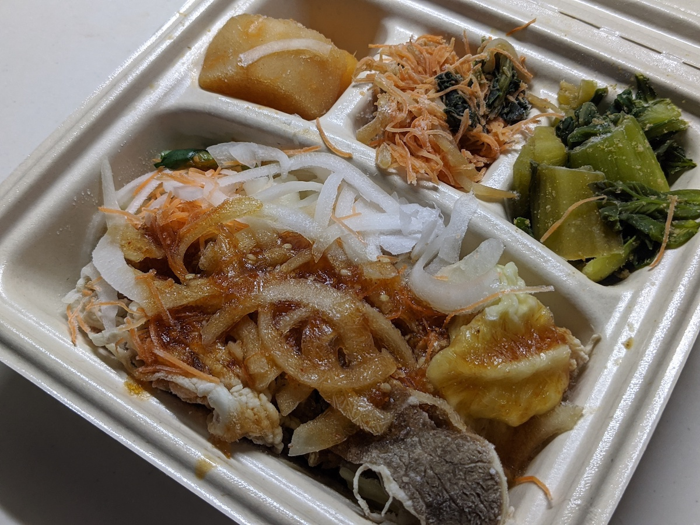
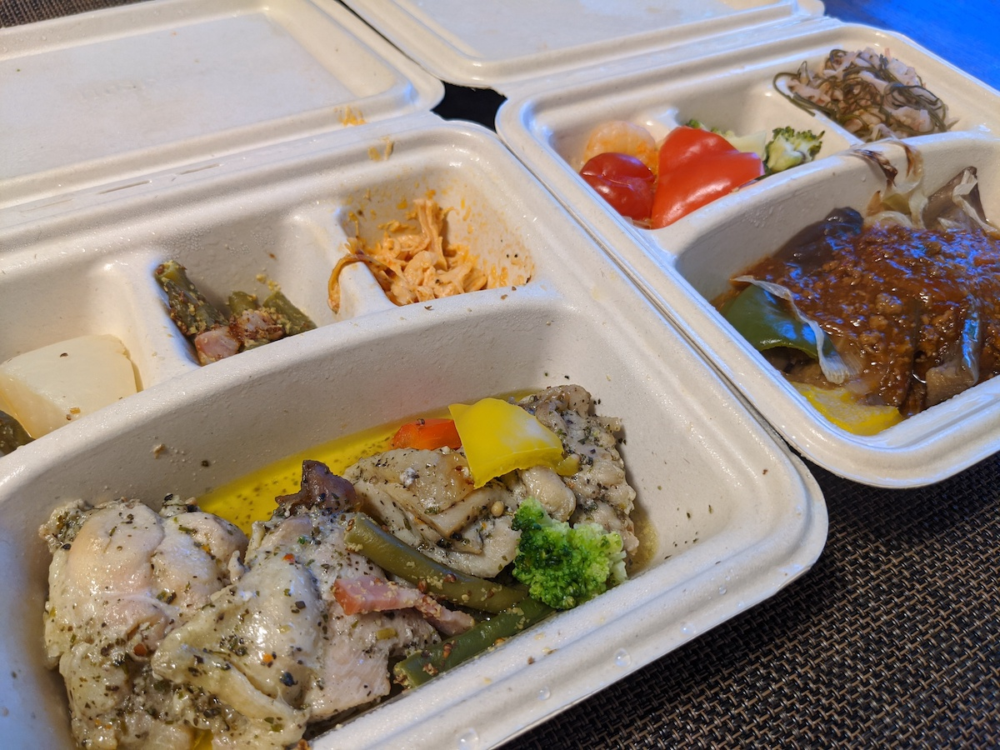
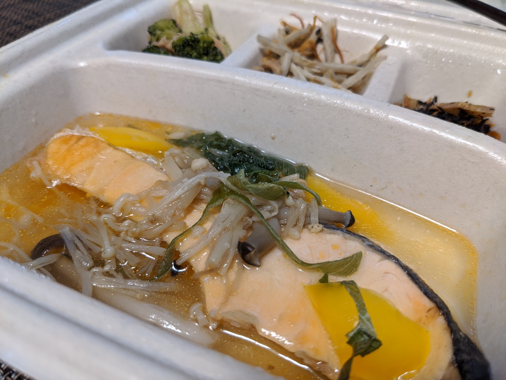
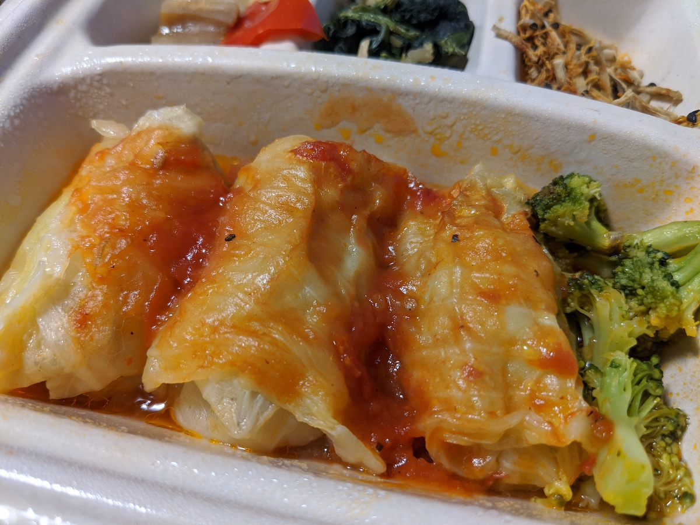
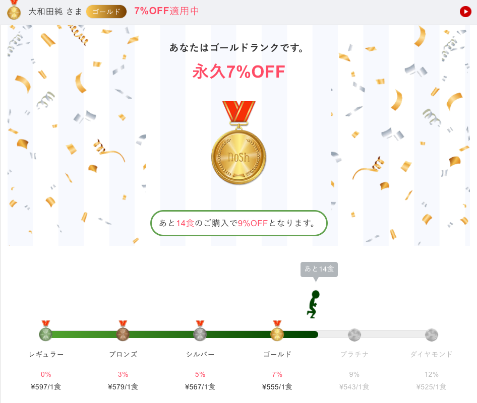
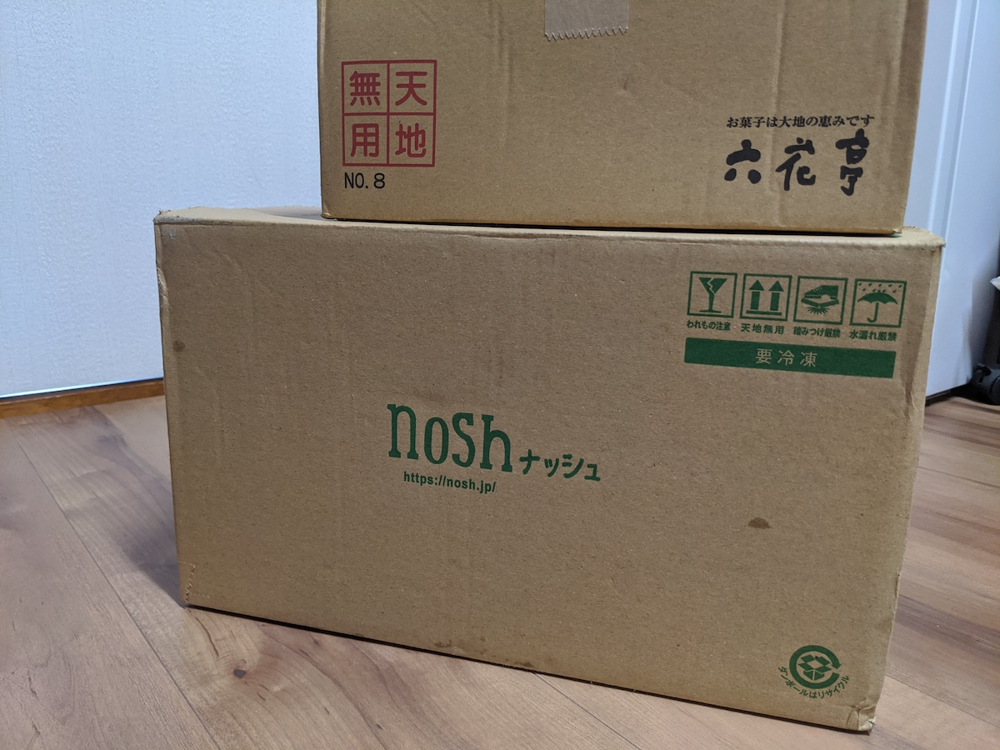
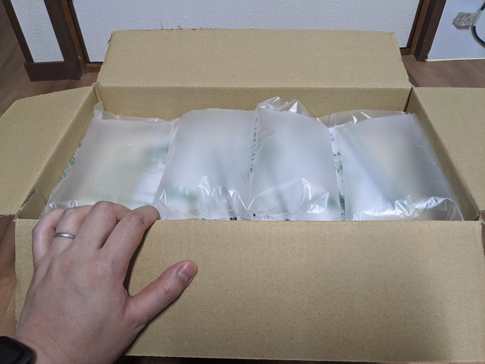
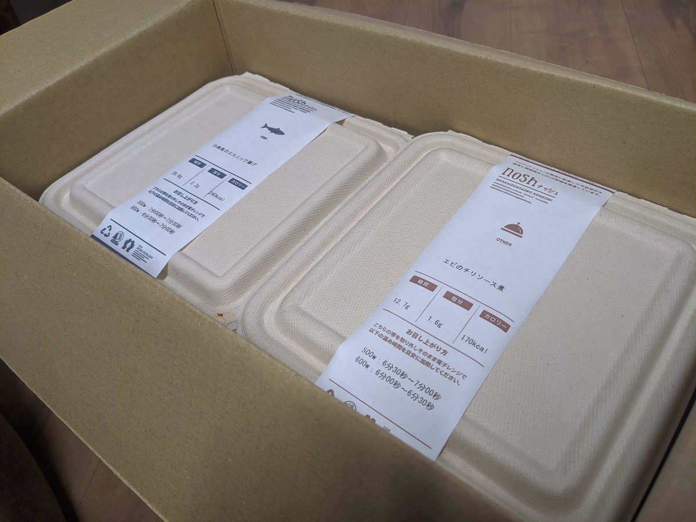
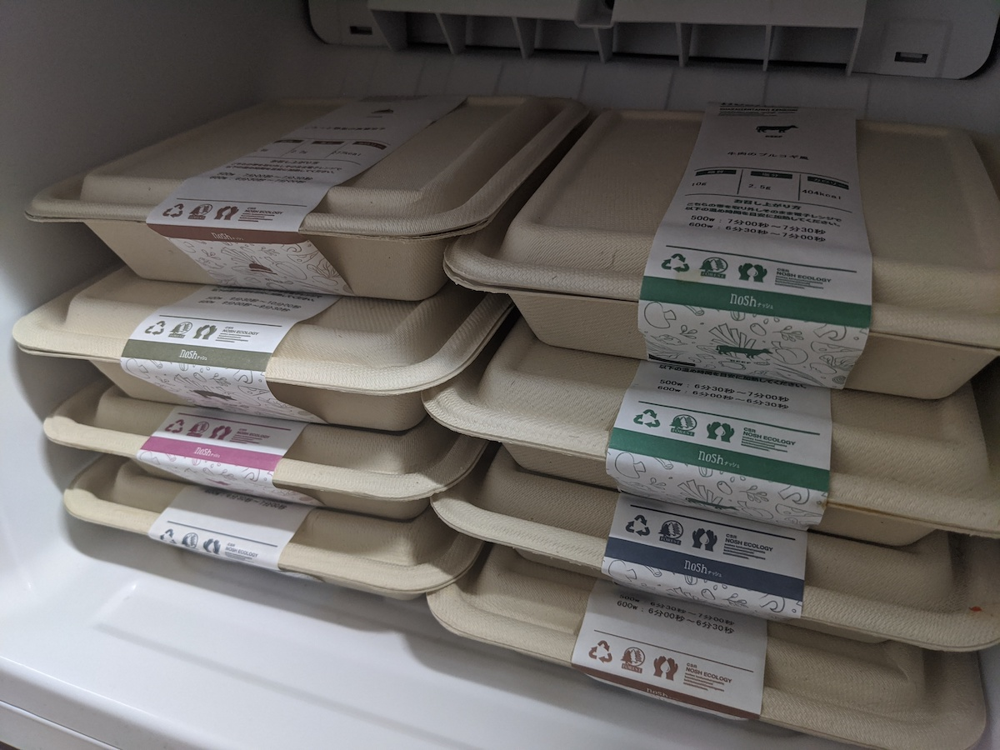
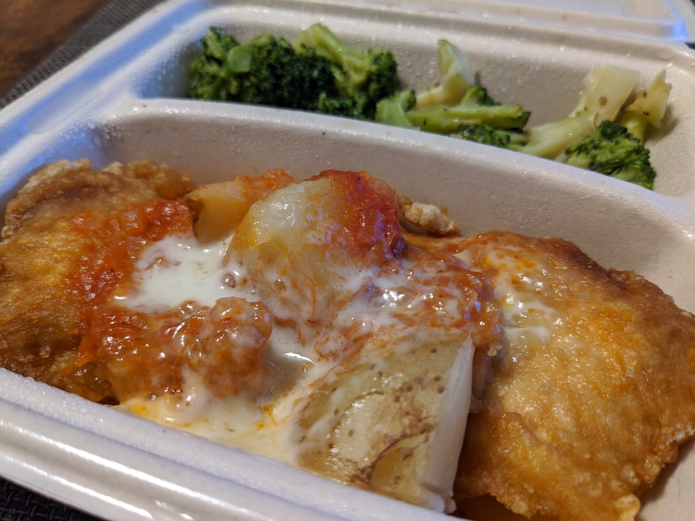

【nosh-ナッシュ】ヘルシー・低糖質の食事宅配サイト の利用を始めてから 1 ヶ月以上が経ち、周囲に興味を持つ人が増えてきたので紹介記事を書くことにしました。

どうが で しょうかい する よ
このさき、かんじもたくさんでてきますし、もじなんかよみたくないぜ、はなしてきかせてくれ〜というひとには、ぼくの Vlog で nosh についてはなしたかいがあるので、こちらをどうぞ！
nosh こうしきのしょうかいどうがもあります。
利用のはじまり
友人が「nosh いいぞ」と言及しているのを見かけて、ためしに注文してみたのが 2020-05-25 のことでした。プランは「6 食セット」「8 食セット」「10 食セット」とあるので、まずは最小の「6 食セット」を頼みました。食べてみてよさそうだったら継続するし、我が家に合わないようであれば 6 食だけ食べて解約すればいいので、気軽に注文しました。
2020-05-30 には届いて、翌 2020-05-31 のランチに妻とふたりで実食しました。「おいしいじゃん！」となったのでその日のうちに「8 食を毎週」というプランを選んで設定しました。以降、毎週土曜日に 8 食を受け取る生活を今日まで継続しています。
これは初めて食べたときの写真。

我が家の状況
- 夫婦ふたりで生活している
- 2020 年 2 月以降、ほとんどの食事を自宅で行っている
- 「大和田家の持続可能な生活方針2020」というものがある
- 「食事」「健康」「学習」「経済」「娯楽」「交友」「地域」という 7 つの軸について方針をまとめてある
- 「食事」についてはなるべくおいしいものを食べる、自炊は重視しない、楽をするにこしたことはない
- 「健康」については @june29 の健康診断結果がよくなるようにやっていく
この状況に nosh がマッチしたので継続利用しています。
毎週の平日が 5 日あるうち、4 日分のランチを nosh でまかなっています。在宅勤務をしている平日、ランチタイムの休憩に合わせて電子レンジで温めるだけで食事の用意が済んでしまうところが最高です。最近は「冷凍庫をあけて、いちばん上にあるやつを取り出して温める」くらいの運用になっていて、とにかく考えるコストがかからないところが気に入っています。
お昼になったら栄養バランスのとれた食事がポンッと出てくるという意味で、給食っぽさがありますね。


料金
ぼくは今「ゴールド」ランクになっていて、1 食の値段が 555 円となっています。送料やら消費税やらも込み込みで計算すると 1 食あたり約 750 円くらい。渋谷のオフィスに出勤して渋谷でランチを食べていたころはだいたい 800 〜 1,500 円くらいを使っていましたから、ぼくの場合はランチにかかる費用は以前より安くなっています。

量
ちょっと少なめです。最初の 1 週間は nosh のお弁当とあわせてカップスープも食べたりしていました。今ではすっかり慣れてきて、ランチはだいたい nosh のお弁当だけで済んでいて、ディナーなど nosh のお弁当以外のものを食べるときも以前より少ない量におさまるようになりました。胃が小さくなったのでしょう。
写真で紹介
毎週土曜日に受け取るダンボール箱です。六花亭の箱は、ぼくのバースデイに合わせて暴力的なおいしさのお菓子を注文したときのやつなので気にしないでください。

空気がたっぷり入っているので安心できます。

ジャジャーン。

冷凍庫、今はほとんど nosh 専用庫になっています。届いたときに格納して、あとは上から順に取り出して食べています。もっと大きい冷凍室のある冷蔵庫に買い替えて、nosh も 10 食セットで頼むのもありかもね〜と家庭内で話していたりもします。

興味を持った人へ
まずは 6 食からでも始めてみるのがおすすめです！気に入ったら継続しましょう。ぼくもよくわかっていないのですが、下記リンクから購入に行くと最初の 3 回の注文が 500 円引きになるみたいです！
ぼくが用意したリンクを踏むのが癪！という人は、アドレスバーに nosh.jp と打ち込むか、検索してたどりつくなどしてください。いっしょに nosh 生活していきましょう。

(追記) この記事に対する反応
僕も6/1からnoshを使っていて、最初は物足りなかった分量にだんだん慣れてくるの分かる。今はnoshに納豆で満足。 / “ヘルシーな冷凍弁当宅配サービス「nosh」を利用している話 - #june29jp” https://t.co/EmRefniSYx
— 小野マトペ (@ono_matope) July 7, 2020
nosh、最初足りないけど満足するようになるのとてもわかる✨我が家は週6食分頼んでいて昼食が週の半分noshという運用なのだけれど、時短と健康、料理するときには料理が楽しいと思う余裕を確保できるようになったので感謝しか無いです😌https://t.co/RlDCTMPWdK
— neko (@neko314_) July 7, 2020
良さそうなので頼んでみた https://t.co/sTtU5yp6AS
— Yuki AKAMATSU (@ukstudio) July 7, 2020
電子レンジ買ったので注文してみた https://t.co/QCcQa2S0OX
— 豆乳 (@hrysd) July 7, 2020
良さそうだったので早速注文しました！(もちろん記事のリンクから)
— Satoshi Asano (@ninjinkun) July 7, 2020
早速注文してみました！
— ま (@Magistol) July 8, 2020